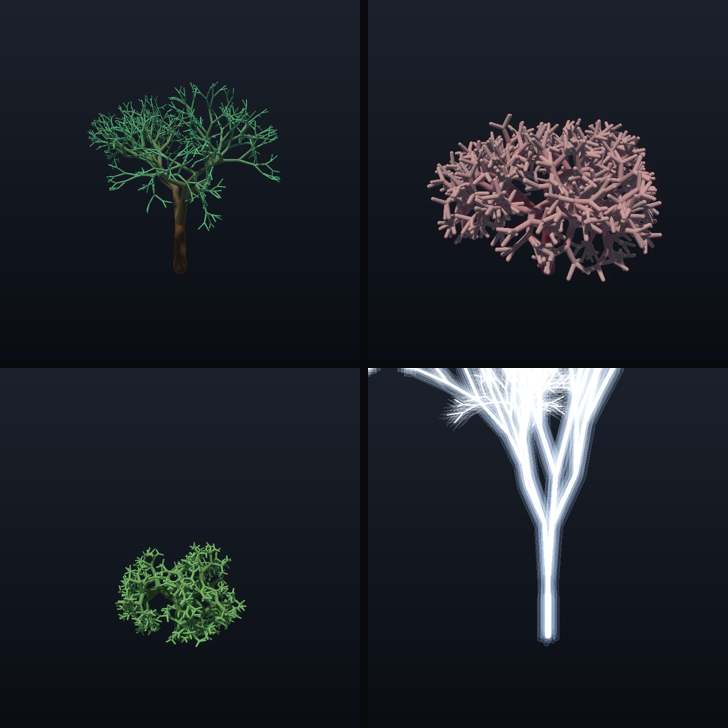

/ lab
Work Graphsで枝を再帰生成する
GPUが枝分かれを繰り返し、樹・珊瑚・藪・稲妻を生成するプロシージャル生成デモです。
2024年にDirectX 12に導入されたWork Graphsを使用しました。GPU上のシェーダが次の処理を起動する機能により、枝の生成をGPU内で再帰的に進めます。生成した形状はSDFレイマーチで描画します。
完成したデモ
1本の種から枝を分岐させ、根元から先端へ伸びる構造を生成します。分岐数、広がり、長さ比、ねじれ、深さ、色を変更することで、同じ再帰グラフから複数の形を作れます。

Work Graphsを使った理由
従来のGPU実行では、CPUがシェーダの実行回数を決めて処理を並べます。Work Graphsでは、GPU上のシェーダノードが次のノードを起動できます。
枝の数は実行中の分岐によって増えます。親の枝が子の枝を作り、その子がさらに枝を作る処理を、CPUに戻さずGPU内で進めるためにWork Graphsを採用しました。
実装
-
枝の生成：
Work Graphの
Branchノードが、枝を表すcapsuleをバッファへatomic appendします。残りの深さに応じて子recordを同じノードへemitし、NodeMaxRecursionDepthを使って再帰処理を制御します。 - 描画： compute shaderでcapsule群のunion SDFをスフィアトレースします。法線、soft shadow、AOで陰影を付け、発光プリセットにはemissiveとbloomを使います。
- アニメーション： 各枝に生成される深さの割合を持たせ、表示範囲を根元から先端へ進めます。
操作できる項目
実行ファイルを起動すると、樹・珊瑚・藪・稲妻のプリセットを選択できます。分岐数、深さ、広がり、ねじれ、色、発光も画面内で変更でき、変更のたびにWork Graphが構造を再生成します。
ドラッグによる回転、ホイールによるズーム、成長アニメーションの再生とリセットに対応しています。内部描画解像度はウィンドウの大きさとは別に調整できます。通常の起動にコマンド引数は不要で、画像や動画を書き出す場合のみフラグを使います。